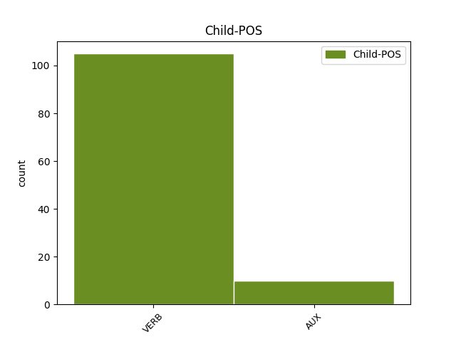

Distribution of features within this leaf

Agreement Rules sorted by frequency.
- When the dependent token is the parataxis(parataxis) of the head token, and the dependent token is VERB.
1 6.2 _ _ _ _ 0 _ _ _
2 . _ _ _ _ 0 _ _ _
3 nagrinėja nagrinėti VERB vksm.asm.tiesiog.es.vns.3. Mood=Ind|Number=Sing|Person=3|Polarity=Pos|Tense=Pres|VerbForm=Fin 10 parataxis _ _
4 ir _ _ _ _ 0 _ _ _
5 vertina _ _ _ _ 0 _ _ _
6 Programos _ _ _ _ 0 _ _ _
7 įgyvendinimo _ _ _ _ 0 _ _ _
8 ataskaitas _ _ _ _ 0 _ _ _
9 , _ _ _ _ 0 _ _ _
10 teikia teikti VERB vksm.asm.tiesiog.es.vns.3. Mood=Ind|Number=Sing|Person=3|Polarity=Pos|Tense=Pres|VerbForm=Fin 0 _ _ _
11 pasiūlymus _ _ _ _ 0 _ _ _
12 Aplinkos _ _ _ _ 0 _ _ _
13 ministerijai _ _ _ _ 0 _ _ _
14 dėl _ _ _ _ 0 _ _ _
15 Programos _ _ _ _ 0 _ _ _
16 ir _ _ _ _ 0 _ _ _
17 jos _ _ _ _ 0 _ _ _
18 įgyvendinimo _ _ _ _ 0 _ _ _
19 teisės _ _ _ _ 0 _ _ _
20 aktų _ _ _ _ 0 _ _ _
21 pakeitimo _ _ _ _ 0 _ _ _
22 ar _ _ _ _ 0 _ _ _
23 papildymo _ _ _ _ 0 _ _ _
24 ; _ _ _ _ 0 _ _ _
1 Galima _ _ _ _ 0 _ _ _
2 daryti _ _ _ _ 0 _ _ _
3 išvadą _ _ _ _ 0 _ _ _
4 , _ _ _ _ 0 _ _ _
5 kad _ _ _ _ 0 _ _ _
6 žmonės _ _ _ _ 0 _ _ _
7 labiau _ _ _ _ 0 _ _ _
8 domisi _ _ _ _ 0 _ _ _
9 savo _ _ _ _ 0 _ _ _
10 teisėmis _ _ _ _ 0 _ _ _
11 , _ _ _ _ 0 _ _ _
12 siekia _ _ _ _ 0 _ _ _
13 jas _ _ _ _ 0 _ _ _
14 apginti _ _ _ _ 0 _ _ _
15 bei _ _ _ _ 0 _ _ _
16 žino žinoti VERB vksm.asm.tiesiog.es.dgs.3. Mood=Ind|Number=Plur|Person=3|Polarity=Pos|Tense=Pres|VerbForm=Fin 0 _ _ _
17 , _ _ _ _ 0 _ _ _
18 kur _ _ _ _ 0 _ _ _
19 reikia reikėti VERB vksm.asm.tiesiog.es.3. Mood=Ind|Person=3|Polarity=Pos|Tense=Pres|VerbForm=Fin 16 mod _ _
20 kreiptis _ _ _ _ 0 _ _ _
21 esant _ _ _ _ 0 _ _ _
22 jų _ _ _ _ 0 _ _ _
23 teisių _ _ _ _ 0 _ _ _
24 pažeidimams _ _ _ _ 0 _ _ _
25 . _ _ _ _ 0 _ _ _
1 2006 _ _ _ _ 0 _ _ _
2 m _ _ _ _ 0 _ _ _
3 . _ _ _ _ 0 _ _ _
4 Inspekcija _ _ _ _ 0 _ _ _
5 , _ _ _ _ 0 _ _ _
6 atlikusi _ _ _ _ 0 _ _ _
7 išankstinę _ _ _ _ 0 _ _ _
8 patikrą _ _ _ _ 0 _ _ _
9 , _ _ _ _ 0 _ _ _
10 išdavė išduoti VERB vksm.asm.tiesiog.būt-k.vns.3. Aspect=Perf|Mood=Ind|Number=Sing|Person=3|Polarity=Pos|Tense=Past|VerbForm=Fin 0 _ _ _
11 269 _ _ _ _ 0 _ _ _
12 leidimus _ _ _ _ 0 _ _ _
13 tvarkyti _ _ _ _ 0 _ _ _
14 asmens _ _ _ _ 0 _ _ _
15 duomenis _ _ _ _ 0 _ _ _
16 , _ _ _ _ 0 _ _ _
17 iš _ _ _ _ 0 _ _ _
18 jų _ _ _ _ 0 _ _ _
19 242 _ _ _ _ 0 _ _ _
20 leidimai _ _ _ _ 0 _ _ _
21 buvo būti AUX vksm.asm.tiesiog.būt-k.dgs.3. Aspect=Perf|Mood=Ind|Number=Plur|Person=3|Polarity=Pos|Tense=Past|VerbForm=Fin 10 parataxis _ _
22 išduoti _ _ _ _ 0 _ _ _
23 švietimo _ _ _ _ 0 _ _ _
24 įstaigoms _ _ _ _ 0 _ _ _
25 , _ _ _ _ 0 _ _ _
26 22 _ _ _ _ 0 _ _ _
27 – _ _ _ _ 0 _ _ _
28 viešojo _ _ _ _ 0 _ _ _
29 sektoriaus _ _ _ _ 0 _ _ _
30 įstaigoms _ _ _ _ 0 _ _ _
31 ir _ _ _ _ 0 _ _ _
32 5 _ _ _ _ 0 _ _ _
33 – _ _ _ _ 0 _ _ _
34 privataus _ _ _ _ 0 _ _ _
35 sektoriaus _ _ _ _ 0 _ _ _
36 įmonėms _ _ _ _ 0 _ _ _
37 . _ _ _ _ 0 _ _ _
1 Čia _ _ _ _ 0 _ _ _
2 pat _ _ _ _ 0 _ _ _
3 bendraamžių _ _ _ _ 0 _ _ _
4 dėka _ _ _ _ 0 _ _ _
5 vaikai _ _ _ _ 0 _ _ _
6 gauna _ _ _ _ 0 _ _ _
7 grįžtamąjį _ _ _ _ 0 _ _ _
8 ryšį _ _ _ _ 0 _ _ _
9 – _ _ _ _ 0 _ _ _
10 visi _ _ _ _ 0 _ _ _
11 išsako išsakyti VERB vksm.asm.tiesiog.es.dgs.3. Mood=Ind|Number=Plur|Person=3|Polarity=Pos|Tense=Pres|VerbForm=Fin 0 _ _ _
12 , _ _ _ _ 0 _ _ _
13 kas _ _ _ _ 0 _ _ _
14 buvo būti AUX vksm.asm.tiesiog.būt-k.3. Aspect=Perf|Mood=Ind|Person=3|Polarity=Pos|Tense=Past|VerbForm=Fin 11 mod _ _
15 atlikta _ _ _ _ 0 _ _ _
16 tinkamai _ _ _ _ 0 _ _ _
17 . _ _ _ _ 0 _ _ _
1 Tai _ _ _ _ 0 _ _ _
2 dėl _ _ _ _ 0 _ _ _
3 telepatijos _ _ _ _ 0 _ _ _
4 problemų _ _ _ _ 0 _ _ _
5 , _ _ _ _ 0 _ _ _
6 automobiliai _ _ _ _ 0 _ _ _
7 dar _ _ _ _ 0 _ _ _
8 neišmoko neišmokyti VERB vksm.asm.neig.tiesiog.būt-k.dgs.3. Aspect=Perf|Mood=Ind|Number=Plur|Person=3|Polarity=Neg|Tense=Past|VerbForm=Fin 0 _ _ _
9 skaityti _ _ _ _ 0 _ _ _
10 žmogaus _ _ _ _ 0 _ _ _
11 minčių _ _ _ _ 0 _ _ _
12 , _ _ _ _ 0 _ _ _
13 sakau _ _ _ _ 0 _ _ _
14 jai _ _ _ _ 0 _ _ _
15 , _ _ _ _ 0 _ _ _
16 nors _ _ _ _ 0 _ _ _
17 Japonijoj _ _ _ _ 0 _ _ _
18 gal _ _ _ _ 0 _ _ _
19 jau _ _ _ _ 0 _ _ _
20 ir _ _ _ _ 0 _ _ _
21 išmoko _ _ _ _ 0 _ _ _
22 , _ _ _ _ 0 _ _ _
23 viskas _ _ _ _ 0 _ _ _
24 dabar _ _ _ _ 0 _ _ _
25 taip _ _ _ _ 0 _ _ _
26 greitai _ _ _ _ 0 _ _ _
27 keičiasi keistis VERB vksm.asm.sngr.tiesiog.es.3. Mood=Ind|Person=3|Polarity=Pos|Reflex=Yes|Tense=Pres|VerbForm=Fin 8 orphan _ SpaceAfter=No
28 . _ _ _ _ 0 _ _ _
Disagree Examples:
1 Tikrai _ _ _ _ 0 _ _ _
2 nesinori _ _ _ _ 0 _ _ _
3 valstybinių _ _ _ _ 0 _ _ _
4 istorijos _ _ _ _ 0 _ _ _
5 egzaminų _ _ _ _ 0 _ _ _
6 teste _ _ _ _ 0 _ _ _
7 pamatyti _ _ _ _ 0 _ _ _
8 tokius _ _ _ _ 0 _ _ _
9 klausimus _ _ _ _ 0 _ _ _
10 : _ _ _ _ 0 _ _ _
11 išvardykite išvardyti VERB vksm.asm.liep.dgs.2. Mood=Imp|Number=Plur|Person=2|Polarity=Pos|VerbForm=Fin 0 _ _ _
12 , _ _ _ _ 0 _ _ _
13 ką _ _ _ _ 0 _ _ _
14 blogo _ _ _ _ 0 _ _ _
15 padarė padaryti VERB vksm.asm.tiesiog.būt-k.vns.3. Aspect=Perf|Mood=Ind|Number=Sing|Person=3|Polarity=Pos|Tense=Past|VerbForm=Fin 11 mod _ _
16 Lietuvos _ _ _ _ 0 _ _ _
17 visuomenei _ _ _ _ 0 _ _ _
18 V _ _ _ _ 0 _ _ _
19 . _ _ _ _ 0 _ _ _
20 Landsbergis _ _ _ _ 0 _ _ _
21 , _ _ _ _ 0 _ _ _
22 arba _ _ _ _ 0 _ _ _
23 kodėl _ _ _ _ 0 _ _ _
24 avantiūristinė _ _ _ _ 0 _ _ _
25 Sąjūdžio _ _ _ _ 0 _ _ _
26 veikla _ _ _ _ 0 _ _ _
27 trukdė _ _ _ _ 0 _ _ _
28 išmintingai _ _ _ _ 0 _ _ _
29 LKP _ _ _ _ 0 _ _ _
30 politikai _ _ _ _ 0 _ _ _
31 ? _ _ _ _ 0 _ _ _
1 Pristatytas _ _ _ _ 0 _ _ _
2 biudžeto _ _ _ _ 0 _ _ _
3 koregavimas _ _ _ _ 0 _ _ _
4 biudžeto _ _ _ _ 0 _ _ _
5 karpymas _ _ _ _ 0 _ _ _
6 su _ _ _ _ 0 _ _ _
7 buhalterio _ _ _ _ 0 _ _ _
8 žirklėmis _ _ _ _ 0 _ _ _
9 , _ _ _ _ 0 _ _ _
10 manau manyti VERB vksm.asm.tiesiog.es.vns.1. Mood=Ind|Number=Sing|Person=1|Polarity=Pos|Tense=Pres|VerbForm=Fin 13 parataxis _ SpaceAfter=No
11 , _ _ _ _ 0 _ _ _
12 toliau _ _ _ _ 0 _ _ _
13 stumia stumti VERB vksm.asm.tiesiog.es.vns.3. Mood=Ind|Number=Sing|Person=3|Polarity=Pos|Tense=Pres|VerbForm=Fin 0 _ _ _
14 mūsų _ _ _ _ 0 _ _ _
15 valstybę _ _ _ _ 0 _ _ _
16 į _ _ _ _ 0 _ _ _
17 dar _ _ _ _ 0 _ _ _
18 didesnę _ _ _ _ 0 _ _ _
19 duobę _ _ _ _ 0 _ _ _
20 . _ _ _ _ 0 _ _ _
1 Šitai _ _ _ _ 0 _ _ _
2 , _ _ _ _ 0 _ _ _
3 manytume manyti VERB vksm.asm.tar.dgs.1. Mood=Cnd|Number=Plur|Person=1|Polarity=Pos|VerbForm=Fin 5 parataxis _ SpaceAfter=No
4 , _ _ _ _ 0 _ _ _
5 patikslintų patikslinti VERB vksm.asm.tar.3. Mood=Cnd|Person=3|Polarity=Pos|VerbForm=Fin 0 _ _ _
6 žiniasklaidos _ _ _ _ 0 _ _ _
7 ir _ _ _ _ 0 _ _ _
8 viešosios _ _ _ _ 0 _ _ _
9 nuomonės _ _ _ _ 0 _ _ _
10 duomenis _ _ _ _ 0 _ _ _
11 , _ _ _ _ 0 _ _ _
12 kurie _ _ _ _ 0 _ _ _
13 gana _ _ _ _ 0 _ _ _
14 išsamūs _ _ _ _ 0 _ _ _
15 . _ _ _ _ 0 _ _ _
1 – _ _ _ _ 0 _ _ _
2 Ponia _ _ _ _ 0 _ _ _
3 , _ _ _ _ 0 _ _ _
4 bene _ _ _ _ 0 _ _ _
5 jumyse _ _ _ _ 0 _ _ _
6 granata _ _ _ _ 0 _ _ _
7 sprogo _ _ _ _ 0 _ _ _
8 ? _ _ _ _ 0 _ _ _
9 – _ _ _ _ 0 _ _ _
10 iškviestas _ _ _ _ 0 _ _ _
11 chirurgas _ _ _ _ 0 _ _ _
12 keiksis _ _ _ _ 0 _ _ _
13 patyliukais _ _ _ _ 0 _ _ _
14 , _ _ _ _ 0 _ _ _
15 bet _ _ _ _ 0 _ _ _
16 tu _ _ _ _ 0 _ _ _
17 vis _ _ _ _ 0 _ _ _
18 tiek _ _ _ _ 0 _ _ _
19 girdėsi _ _ _ _ 0 _ _ _
20 , _ _ _ _ 0 _ _ _
21 keiksis _ _ _ _ 0 _ _ _
22 , _ _ _ _ 0 _ _ _
23 bet _ _ _ _ 0 _ _ _
24 nekaltins _ _ _ _ 0 _ _ _
25 netikusių _ _ _ _ 0 _ _ _
26 kolegų _ _ _ _ 0 _ _ _
27 , _ _ _ _ 0 _ _ _
28 kurie _ _ _ _ 0 _ _ _
29 gimdyvę _ _ _ _ 0 _ _ _
30 paliko _ _ _ _ 0 _ _ _
31 likimo _ _ _ _ 0 _ _ _
32 valiai _ _ _ _ 0 _ _ _
33 , _ _ _ _ 0 _ _ _
34 o _ _ _ _ 0 _ _ _
35 ši _ _ _ _ 0 _ _ _
36 ėmė _ _ _ _ 0 _ _ _
37 ir _ _ _ _ 0 _ _ _
38 persistengė _ _ _ _ 0 _ _ _
39 , _ _ _ _ 0 _ _ _
40 nes _ _ _ _ 0 _ _ _
41 vaikais _ _ _ _ 0 _ _ _
42 nešaudoma _ _ _ _ 0 _ _ _
43 , _ _ _ _ 0 _ _ _
44 ponia _ _ _ _ 0 _ _ _
45 , _ _ _ _ 0 _ _ _
46 dabar _ _ _ _ 0 _ _ _
47 gulėkit gulėti VERB vksm.asm.liep.dgs.2. Mood=Imp|Number=Plur|Person=2|Polarity=Pos|VerbForm=Fin 57 parataxis _ _
48 ramiai _ _ _ _ 0 _ _ _
49 , _ _ _ _ 0 _ _ _
50 pakentėkit _ _ _ _ 0 _ _ _
51 , _ _ _ _ 0 _ _ _
52 pakentėkit _ _ _ _ 0 _ _ _
53 , _ _ _ _ 0 _ _ _
54 kaip _ _ _ _ 0 _ _ _
55 nors _ _ _ _ 0 _ _ _
56 jus _ _ _ _ 0 _ _ _
57 sulopysiu sulopyti VERB vksm.asm.tiesiog.būs.vns.1. Mood=Ind|Number=Sing|Person=1|Polarity=Pos|Tense=Fut|VerbForm=Fin 0 _ _ _
58 ... _ _ _ _ 0 _ _ _
1 – _ _ _ _ 0 _ _ _
2 Ponia _ _ _ _ 0 _ _ _
3 , _ _ _ _ 0 _ _ _
4 bene _ _ _ _ 0 _ _ _
5 jumyse _ _ _ _ 0 _ _ _
6 granata _ _ _ _ 0 _ _ _
7 sprogo sprogti VERB vksm.asm.tiesiog.būt-k.vns.3. Aspect=Perf|Mood=Ind|Number=Sing|Person=3|Polarity=Pos|Tense=Past|VerbForm=Fin 0 _ _ _
8 ? _ _ _ _ 0 _ _ _
9 – _ _ _ _ 0 _ _ _
10 iškviestas _ _ _ _ 0 _ _ _
11 chirurgas _ _ _ _ 0 _ _ _
12 keiksis _ _ _ _ 0 _ _ _
13 patyliukais _ _ _ _ 0 _ _ _
14 , _ _ _ _ 0 _ _ _
15 bet _ _ _ _ 0 _ _ _
16 tu _ _ _ _ 0 _ _ _
17 vis _ _ _ _ 0 _ _ _
18 tiek _ _ _ _ 0 _ _ _
19 girdėsi _ _ _ _ 0 _ _ _
20 , _ _ _ _ 0 _ _ _
21 keiksis _ _ _ _ 0 _ _ _
22 , _ _ _ _ 0 _ _ _
23 bet _ _ _ _ 0 _ _ _
24 nekaltins _ _ _ _ 0 _ _ _
25 netikusių _ _ _ _ 0 _ _ _
26 kolegų _ _ _ _ 0 _ _ _
27 , _ _ _ _ 0 _ _ _
28 kurie _ _ _ _ 0 _ _ _
29 gimdyvę _ _ _ _ 0 _ _ _
30 paliko _ _ _ _ 0 _ _ _
31 likimo _ _ _ _ 0 _ _ _
32 valiai _ _ _ _ 0 _ _ _
33 , _ _ _ _ 0 _ _ _
34 o _ _ _ _ 0 _ _ _
35 ši _ _ _ _ 0 _ _ _
36 ėmė _ _ _ _ 0 _ _ _
37 ir _ _ _ _ 0 _ _ _
38 persistengė _ _ _ _ 0 _ _ _
39 , _ _ _ _ 0 _ _ _
40 nes _ _ _ _ 0 _ _ _
41 vaikais _ _ _ _ 0 _ _ _
42 nešaudoma _ _ _ _ 0 _ _ _
43 , _ _ _ _ 0 _ _ _
44 ponia _ _ _ _ 0 _ _ _
45 , _ _ _ _ 0 _ _ _
46 dabar _ _ _ _ 0 _ _ _
47 gulėkit _ _ _ _ 0 _ _ _
48 ramiai _ _ _ _ 0 _ _ _
49 , _ _ _ _ 0 _ _ _
50 pakentėkit _ _ _ _ 0 _ _ _
51 , _ _ _ _ 0 _ _ _
52 pakentėkit _ _ _ _ 0 _ _ _
53 , _ _ _ _ 0 _ _ _
54 kaip _ _ _ _ 0 _ _ _
55 nors _ _ _ _ 0 _ _ _
56 jus _ _ _ _ 0 _ _ _
57 sulopysiu sulopyti VERB vksm.asm.tiesiog.būs.vns.1. Mood=Ind|Number=Sing|Person=1|Polarity=Pos|Tense=Fut|VerbForm=Fin 7 parataxis _ SpaceAfter=No
58 ... _ _ _ _ 0 _ _ _